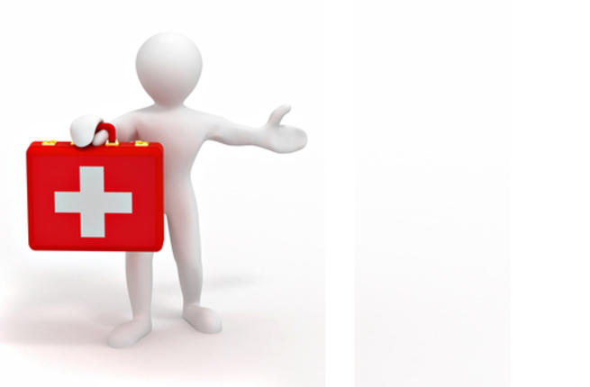

اسعاف الصعقة الكهربائية
حوادث الصعق الكهربائي هي من الحوادث التي تقع في المنازل وأماكن العمل وتتراوح بين صدمة كهربائية(( **بسيطة]] وصعق كهربائي خطير وقاتل.
ينتج الضرر في حالات التعرض إلى صدمة كهربائية من الحروق والكسور حيث تكون العظام بمثابتة المقاومة في الدارة الناتجة،
مما يسبب ارتفاع حرارة العظام وبالتالي تكون الحروق من الداخل إلى الخارج.
كما تتسبب الصدمات الكهربائية في حدوث سكتة قلبية.
خطوات إسعاف ضحية الصدمة الكهربائية تتلخص بما يلي
قطع التيـار الكهربائي أولاً.
إبعاد المصاب عن مصدر التيار
فحص المصاب والتأكد من مدى الضرر
إذا كان المريض واعياً يفضل ذهابه إلى الطوارئ للتأكد من عدم وقوع أية كسور أو حروق داخلية.
إذا ما كان المريض فاقداُ للوعي يتوجب طلب الإسعاف بسرعة أو نقل المريض إلى أقرب مستشفى.
قد يتسبب الصعق الكهربائي في حدوث حروق أو قصور في عمل القلب، في حالة القصور يتم الإسعاف عن طريق إنعاش قلبي رئوي.
الصفحة الرئيسية